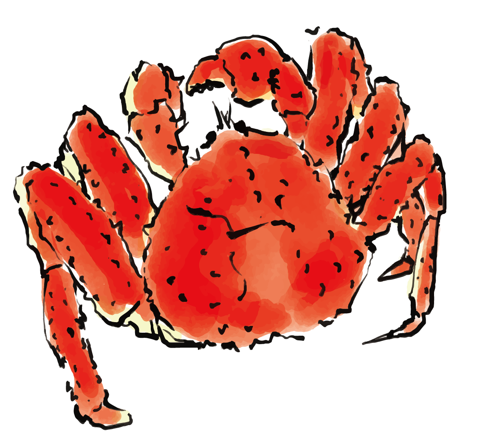
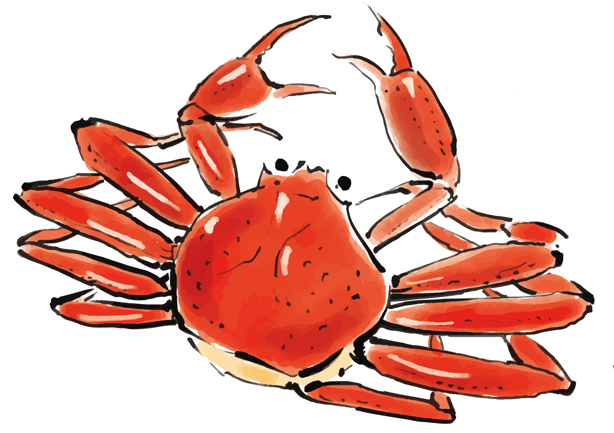
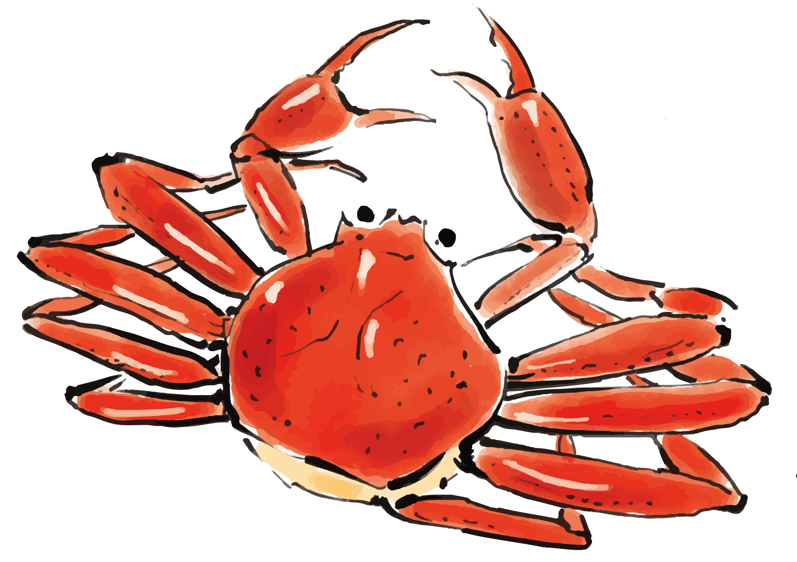
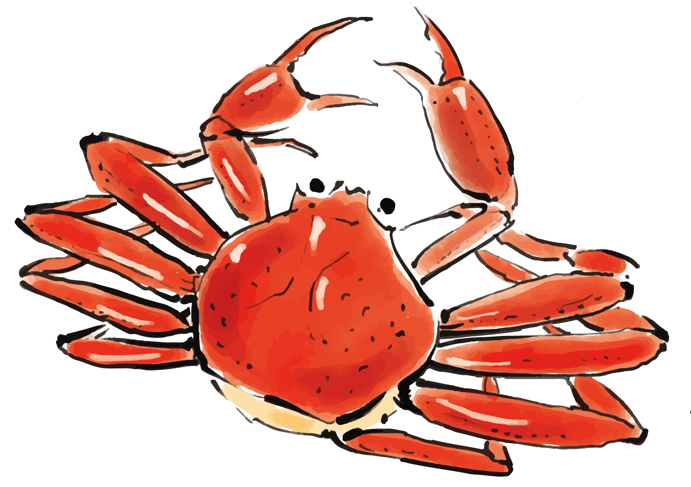

事業紹介

 


私たちは、「北海道の海の幸の台所」札幌市中央卸売市場から車で約30分、日本海に面した石狩市という恵まれた環境のもと蟹の加工・販売を主軸とした水産加工会社です。
弊社では、大手水産会社等からの委託加工を主軸としておりますが、昨今の食のライフスタイルやニーズの変化に伴うお客様からの多様なご要望にお応えするために2019年に工場を全面改修致しました。
衛生的な施設・充実した設備熟練した技術力を取り揃えて国内産 輸入品、一般消費者様向け・加工 業者様向け等々安心安全をモットーにお客様にご満足いただける様々な商品をお届けして参ります。